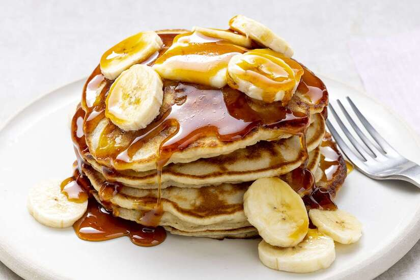

Banana Pancakes with Maple syrup

Ingredients:
- 1/2 cup (75g) self-raising flour
- 1 tablespoon caster (superfine) sugar
- 2/3 cup (160ml) buttermilk
- 1 egg white
- 2 tablespoon maple syrup
- 10 gram (½ ounce) butter, melted
- 1 medium banana (200g), sliced thinly
- 1/4 cup (60ml) maple syrup, extra
- 1/4 cup (30g) roasted pecans, chopped coarsely
Instructions:
- Combine flour and sugar in medium bowl; whisk in buttermilk, egg white, syrup and butter until mixture is smooth. Stir in banana.
- Pour ¼ cup of the batter into heated oiled large frying pan; cook until bubbles appear on surface. Turn; cook until browned lightly. Remove from pan; cover to keep warm. Repeat process with remaining batter to make a total of 8 pancakes.
- Serve pancakes drizzled with extra syrup and sprinkled with nuts.